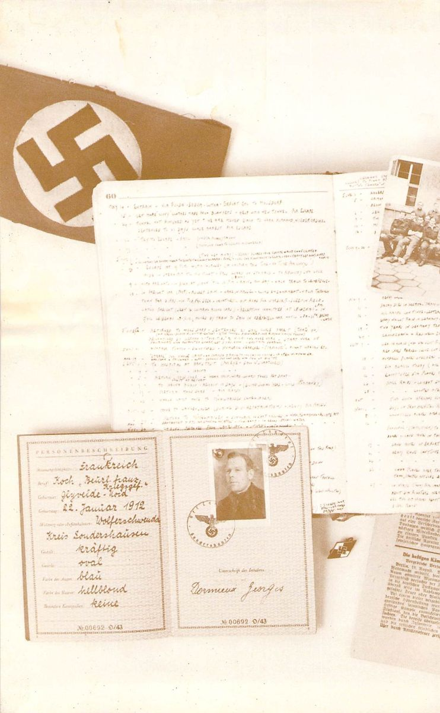

Organized Compassion
The International Red Cross played an important role in the lives of prisoners of war, the foremost being the weekly (bombing permitting) supply of Canadian and British food parcels which truly sustained us. If we had to rely on the meagre German rations, our condition would have been as dire as that of the Russian prisoners.
Over and above this most important contribution, the POW camps received musical and sports equipment which helped overcome the daily boredom. Books were another donation but were usually in short supply and generally tattered and worn by the time you got your hands on the more popular ones.
Red Cross representatives from Switzerland also visited the camps to check on conditions in relation to the Geneva Convention, but the visits were few and nothing ever developed in response to prisoners’ complaints.
The Red Cross also took an active part in the exchange of prisoners. This only involved the DUs (definitely unfit) and only occurred once in our particular camp, Stalag IXC.
All in all, the organization did an excellent job and we, the prisoners, will forever be grateful to it.
